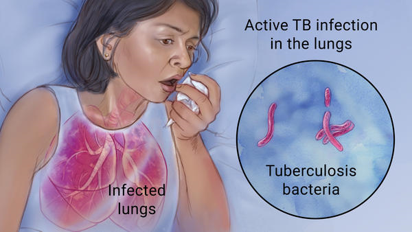
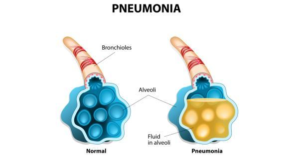
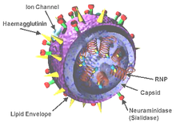
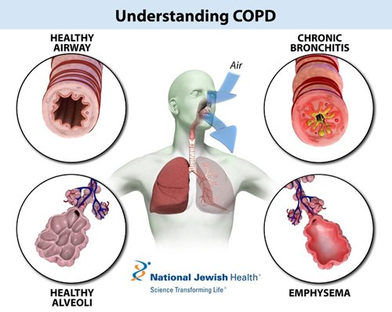
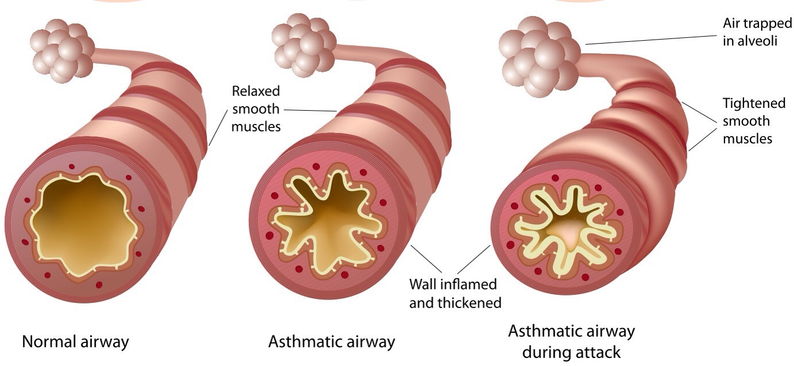
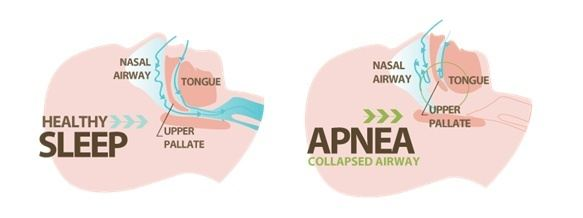
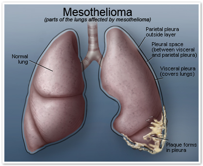
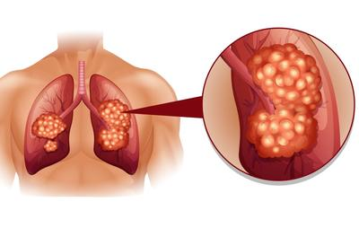

Basic Parts of the Respiratory System

There are at least 9 basic parts of the respiratory system:
Nasal Cavity - nasal cavity form the main external opening for the respiratory system and are the first section of the body's airway.
Pharynx - body cavity that connects the nasal and oral cavities with the larynx and esophagus.
Larynx - Humans use the larynx to breathe, talk, and swallow. Its outer wall of cartilage forms the area of the front of the neck referred to as the Adam's apple. The vocal cords, two bands of muscle, form a V inside the larynx.
Trachea - The trachea (or windpipe) is a wide, hollow tube that connects the larynx (or voice box) to the bronchi of the lungs. It is an integral part of the body's airway and has the vital function of providing air flow to and from the lungs for respiration.
Lungs - The lungs are a pair of spongy, air-filled organs located on either side of the chest. The lungs' main function is to help oxygen from the air we breathe enter the red cells in the blood. The lungs also help the body to get rid of CO2 gas when we breathe out.
Bronchi/Bronchus - A bronchus, is a passage of airway in the respiratory tract that conducts air into the lungs.
Bronchiole - any of the minute branches into which a bronchus divides.
alveolus/alveoli - any of the many tiny air sacs of the lungs which allow for rapid gaseous exchange.
Diaphragm - The diaphragm is the dome-shaped sheet of muscle and tendon that serves as the main muscle of respiration and plays a vital role in the breathing process. Also known as the thoracic diaphragm, it serves as an important anatomical landmark that separates the thorax, or chest, from the abdomen.
Respiratory System Ailments
Tuberculosis (TB)
infectious disease that is caused by the tubercle bacillus, Mycobacterium tuberculosis. In most forms of the disease, the bacillus spreads slowly and widely in the lungs, causing the formation of hard nodules (tubercles) or large cheeselike masses that break down the respiratory tissues and form cavities in the lungs. Blood vessels also can be eroded by the advancing disease, causing the infected person to cough up bright red blood.

Pneumonia
the inflammation and consolidation of the lung tissue as a result of infection, inhalation of foreign particles, or irradiation. Many organisms, including viruses and fungi, can cause pneumonia, but the most common causes are bacteria, in particular species of Streptococcus and Mycoplasma. Pneumonia can also occur as a hypersensitivity, or allergic response, to agents such as mold, humidifiers, and animal excreta or to chemical or physical injury (e.g., smoke inhalation).

Influenza (A.K.A. Flu or Grippe)
an acute viral infection of the upper or lower respiratory tract that is marked by fever, chills, and a generalized feeling of weakness and pain in the muscles, together with varying degrees of soreness in the head and abdomen

Chronic obstructive pulmonary disease (COPD)
progressive respiratory disease characterized by the combination of signs and symptoms of emphysema and bronchitis. It is a common disease, affecting tens of millions of people and causing significant numbers of deaths globally. Sources of noxious particles that can cause COPD include tobacco smoke, air pollution, and the burning of certain fuels in poorly ventilated areas. Identifying and treating these secondary problems via pulmonary rehabilitation (supervised exercise) and other methods may improve the functional status of the lungs.

Asthma
a chronic disorder of the lungs in which inflamed airways are prone to constrict, causing episodes of wheezing, chest tightness, coughing, and breathlessness that range in severity from mild to life-threatening.

Sleep Apnea
respiratory condition characterized by pauses in breathing during sleep. The word apnea is derived from the Greek apnoia, meaning without breath. There are three types of sleep apnea: obstructive, which is the most common form and involves the collapse of tissues of the upper airway; central, which is very rare and results from failure of the central nervous system to activate breathing mechanisms; and mixed, which involves characteristics of both obstructive and central apneas.

Mesothelioma
a tumour that arises from the sheet of cells known as the mesothelium, which lines body cavities and forms the tissue layers referred to as the pleura and the peritoneum. Mesothelial cells can also be found in other areas of the body, such as the scrotal sac and the pericardium (the sac surrounding the heart), and in rare cases the tumour may arise primarily in those locations.

Lung Cancer
Lung cancer occurs primarily in persons between the ages of 45 and 75 years. In countries with a prolonged history of tobacco smoking, between 80 and 90 percent of all cases are caused by smoking. Heavy smokers have a greater likelihood of developing the disease than do light smokers. The risk is also greater for those who started smoking at a young age.

Pneumothorax
condition in which air accumulates in the pleural space, causing it to expand and thus compress the underlying lung, which may then collapse. (The pleural space is a cavity formed by the two pleural membranes that line the thoracic cavity and cover the lungs.) Two major types commonly are recognized: traumatic pneumothorax, which includes accidental and iatrogenic (medically caused) pneumothoraxes, and spontaneous (nontraumatic) pneumothorax.